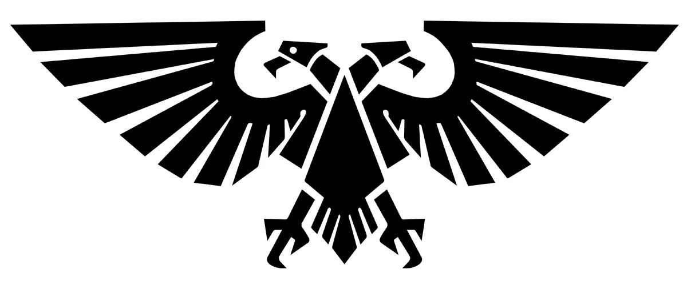

Welcome to Hammered 40K Times

This page is all about the dark future of humanity, the lore behind the Imperium of Man, the stories of the Horus Heresy and the heroes of the Imperium. A repository of all the Legions lost and what remain and their respective lores. The xenos and their treachery, history and blasphemy. And the factions that seek to destroy the galaxy, the heretics, the chaos gods and more.
Learn more at Warhammer Community.